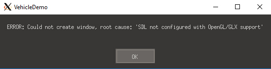

Lumak
This might be old news but the Windows 10 Anniversary Update allows you to run Ubuntu natively on Windows 10.
Here is a video that I found that explains the install process:
https://www.youtube.com/watch?v=2cmJ3eOgiFE

This might be old news but the Windows 10 Anniversary Update allows you to run Ubuntu natively on Windows 10.
Here is a video that I found that explains the install process:
https://www.youtube.com/watch?v=2cmJ3eOgiFE
I couldn’t run “apt-get update” nor any apt-get command successfully. Investigating what’s going on with this, I understand that WSL(beta) is not fully implemented – it’s been 4 months (April) since Microsoft noted this problem and still not fixed.
Did anyone successfully get apt-get update to work?
Edit: related issues are reported here, https://github.com/Microsoft/BashOnWindows/issues/69

FWIW, I haven’t hit any problems and everything has been functioning OK.
Nice. Were you able install other required libs and build Urho3D?
So far I’ve only compiled this project github.com/IfcOpenShell/IfcOpenShell by following the Compiling on *nix instructions (which I updated while at it) with both GCC and Clang (there was something weird about Clang compilation though, it froze for a while eating all of my RAM and took a lot longer than GCC build, but finished nevertheless). I can try building Urho this week and report back.
@Stinkfist were you building in release mode? if so, i have found that CLang will take a long time compiling Glew. I found a note, stating to change optimization to /Os (minimize size) instead of the default, and when i changed that compiler flag, it no longer chewed on that file for a while.
Just a note, not sure if it will help you or not, but something to try.
@NiteLordz Yeah, Release configuration which is the default for the project on *nix.
Regarding building Urho on Ubuntu on Windows: gave it a quick stab and the build starts fine initially (using Clang and cmake_generic.sh), but is hitting some problems at the halfway:
Building CXX object Source/Urho3D/CMakeFiles/Urho3D.dir/AngelScript/DatabaseAPI.cpp.o
In file included from /mnt/c/Dev/GitHub/urho3d/Urho3D/Source/Urho3D/AngelScript/Addons.cpp:25:
/mnt/c/Dev/GitHub/urho3d/Urho3D/Source/Urho3D/AngelScript/../AngelScript/Addons.h:34:10: fatal error:
'AngelScript/angelscript.h' file not found
#include <AngelScript/angelscript.h>
^
In file included from /mnt/c/Dev/GitHub/urho3d/Urho3D/Source/Urho3D/AngelScript/AudioAPI.cpp:25:
In file included from /mnt/c/Dev/GitHub/urho3d/Urho3D/Source/Urho3D/AngelScript/../AngelScript/APITemplates.h:25:
/mnt/c/Dev/GitHub/urho3d/Urho3D/Source/Urho3D/AngelScript/../AngelScript/Addons.h:34:10: fatal error:
'AngelScript/angelscript.h' file not found
#include <AngelScript/angelscript.h>
^
In file included from /mnt/c/Dev/GitHub/urho3d/Urho3D/Source/Urho3D/AngelScript/CoreAPI.cpp:25:
In file included from /mnt/c/Dev/GitHub/urho3d/Urho3D/Source/Urho3D/AngelScript/../AngelScript/APITemplates.h:25:
/mnt/c/Dev/GitHub/urho3d/Urho3D/Source/Urho3D/AngelScript/../AngelScript/Addons.h:34:10: fatal error:
'AngelScript/angelscript.h' file not found
#include <AngelScript/angelscript.h>
^
[ 50%] 1 error generated.
make[2]: *** [Source/Urho3D/CMakeFiles/Urho3D.dir/AngelScript/Addons.cpp.o] Error 1
make[2]: *** Waiting for unfinished jobs....
Building CXX object Source/Urho3D/CMakeFiles/Urho3D.dir/AngelScript/EngineAPI.cpp.o
In file included from /mnt/c/Dev/GitHub/urho3d/Urho3D/Source/Urho3D/AngelScript/EngineAPI.cpp:25:
In file included from /mnt/c/Dev/GitHub/urho3d/Urho3D/Source/Urho3D/AngelScript/../AngelScript/APITemplates.h:25:
/mnt/c/Dev/GitHub/urho3d/Urho3D/Source/Urho3D/AngelScript/../AngelScript/Addons.h:34:10: fatal error:
'AngelScript/angelscript.h' file not found
#include <AngelScript/angelscript.h>
^
1 error generated.
make[2]: *** [Source/Urho3D/CMakeFiles/Urho3D.dir/AngelScript/AudioAPI.cpp.o] Error 1
1 error generated.
make[2]: *** [Source/Urho3D/CMakeFiles/Urho3D.dir/AngelScript/CoreAPI.cpp.o] Error 1
1 error generated.
make[2]: *** [Source/Urho3D/CMakeFiles/Urho3D.dir/AngelScript/EngineAPI.cpp.o] Error 1
make[1]: *** [Source/Urho3D/CMakeFiles/Urho3D.dir/all] Error 2
make: *** [all] Error 2Glad to hear it’s working for you guys. I still can’t get “apt-get” to work properly to proceed.

I have time to play with “bash on Ubuntu on Windows” today. I have a reasonable success to use it to build Urho3D both natively and cross-compile to target Windows platform using MinGW.
What does not work out of the box for me:
[ul][li]Resolving symlink during "make"
I guess it is because it is still in beta, it does not resolving the symlinks consistently. While in bash all appears to be OK, they are not resolved correctly inside a build process. So, compiler complains about missing 3rd-party headers (exactly the same error encountered by Stinkfist). I temporarily workaround the issue by not using symlink at all in my build. Not sure I should check in this tweak as Microsoft may fix this issue soon.[/li]
[li]The .profile is not being sourced automatically
This “bash on Ubuntu on Windows” does not follow the common practice. Instead of auto sourcing the ~/.profile which in turn source the ~/.bashrc, it seems to auto source the ~/.bashrc directly. This is stupid. Because of this, some of the usual settings that are to be expected do not work, for example the umask setting. I have to set the umask manually somewhere to something sane before creating more directories and files in my home directory.[/li][/ul]
What works for me:
[ul][li]apt-get
After configuring it to use a mirror server near my geo location, I have successfully installed all the build-essential packages and Urho3D prerequisite packages. The cmake version from official trusty repo is too old, so I grab a binary from CMake website directly.[/li]
[li]Building Urho3D using rake
After tweaking the build script not to use symlinks then life there is good.  [/li][/ul]
[/li][/ul]
My take. It is worth all the troubles. I have now uninstalled my previous Windows installation of git-bash, ruby/rake, and mingw because now I got the real deal. Even better I have ccache installed too and it works as expected.
@weitjong
That’s awesome! I now have apt-get working!  I have AVG and disabling the firewall didn’t work, and I was in disbelief reading “sometimes have to uninstall anti-virus software” on MS Ubuntu installation notes. I’ve been very reluctant to do something so ridiculous, but apt-get only worked after uninstalling AVG.
I have AVG and disabling the firewall didn’t work, and I was in disbelief reading “sometimes have to uninstall anti-virus software” on MS Ubuntu installation notes. I’ve been very reluctant to do something so ridiculous, but apt-get only worked after uninstalling AVG.
Could you list the required install packages for Ubuntu?
Edit: nvm, I think I have all the required packages installed.
Problem running cmake_generic.sh:
In file included from /home/xxxx/Dev/Urho3D/Urho3D-1.6/Source/Urho3D/AngelScript/Addons.cpp:25:0:
/home/xxxx/Dev/Urho3D/Urho3D-1.6/Source/Urho3D/AngelScript/../AngelScript/Addons.h:34:37: fatal error: AngelScript/angelscript.h: No such file or directory
#include <AngelScript/angelscript.h>What am I missing?
Symbolic links are there:
root@xxxx-PC:/home/xxxx/Dev/Urho3D/builds/linux-1.6# ls -al include/Urho3D/ThirdParty/
total 36
drwxr-xr-x 2 root root 0 Sep 11 12:45 .
drwxr-xr-x 2 root root 0 Sep 11 12:45 ..
lrwxrwxrwx 1 root root 71 Sep 11 12:45 AngelScript -> /home/xxxx/Dev/Urho3D/Urho3D-1.6/Source/ThirdParty/AngelScript/include/
lrwxrwxrwx 1 root root 62 Sep 11 12:45 Box2D -> /home/xxxx/Dev/Urho3D/Urho3D-1.6/Source/ThirdParty/Box2D/Box2D
lrwxrwxrwx 1 root root 62 Sep 11 12:45 Bullet -> /home/xxxx/Dev/Urho3D/Urho3D-1.6/Source/ThirdParty/Bullet/src/
lrwxrwxrwx 1 root root 68 Sep 11 12:45 Civetweb -> /home/xxxx/Dev/Urho3D/Urho3D-1.6/Source/ThirdParty/Civetweb/include/
lrwxrwxrwx 1 root root 66 Sep 11 12:45 Detour -> /home/xxxx/Dev/Urho3D/Urho3D-1.6/Source/ThirdParty/Detour/include/
lrwxrwxrwx 1 root root 71 Sep 11 12:45 DetourCrowd -> /home/xxxx/Dev/Urho3D/Urho3D-1.6/Source/ThirdParty/DetourCrowd/include/
lrwxrwxrwx 1 root root 75 Sep 11 12:45 DetourTileCache -> /home/xxxx/Dev/Urho3D/Urho3D-1.6/Source/ThirdParty/DetourTileCache/include/
lrwxrwxrwx 1 root root 76 Sep 11 12:45 freetype -> /home/xxxx/Dev/Urho3D/Urho3D-1.6/Source/ThirdParty/FreeType/include/freetype
lrwxrwxrwx 1 root root 78 Sep 11 12:45 ft2build.h -> /home/xxxx/Dev/Urho3D/Urho3D-1.6/Source/ThirdParty/FreeType/include/ft2build.h
lrwxrwxrwx 1 root root 58 Sep 11 12:45 GLEW -> /home/xxxx/Dev/Urho3D/Urho3D-1.6/Source/ThirdParty/GLEW/./
lrwxrwxrwx 1 root root 56 Sep 11 12:45 JO -> /home/xxxx/Dev/Urho3D/Urho3D-1.6/Source/ThirdParty/JO/./
drwxr-xr-x 2 root root 0 Sep 11 12:45 kNet
lrwxrwxrwx 1 root root 59 Sep 11 12:45 Lua -> /home/xxxx/Dev/Urho3D/Urho3D-1.6/Source/ThirdParty/Lua/src/
lrwxrwxrwx 1 root root 57 Sep 11 12:45 LZ4 -> /home/xxxx/Dev/Urho3D/Urho3D-1.6/Source/ThirdParty/LZ4/./
lrwxrwxrwx 1 root root 63 Sep 11 12:45 PugiXml -> /home/xxxx/Dev/Urho3D/Urho3D-1.6/Source/ThirdParty/PugiXml/src/
drwxr-xr-x 2 root root 0 Sep 11 12:45 rapidjson
lrwxrwxrwx 1 root root 66 Sep 11 12:45 Recast -> /home/xxxx/Dev/Urho3D/Urho3D-1.6/Source/ThirdParty/Recast/include/
drwxr-xr-x 2 root root 0 Sep 11 12:45 SDL
lrwxrwxrwx 1 root root 62 Sep 11 12:45 StanHull -> /home/xxxx/Dev/Urho3D/Urho3D-1.6/Source/ThirdParty/StanHull/./
drwxr-xr-x 2 root root 0 Sep 11 12:45 STB
lrwxrwxrwx 1 root root 81 Sep 11 12:45 toluapp -> /home/xxxx/Dev/Urho3D/Urho3D-1.6/Source/ThirdParty/toluapp/src/lib/../../include/
root@xxxx-PC:/home/xxxx/Dev/Urho3D/builds/linux-1.6#
root@xxxx-PC:/home/xxxx/Dev/Urho3D/builds/linux-1.6# ls include/Urho3D/ThirdParty/AngelScript
angelscript.h wrap16.h wrap.h wrapmacros.h
[quote=“weitjong”]
[ul]
After tweaking the build script not to use symlinks then life there is good. [/ul][/quote]
I guess what I need is this magic.
There is really nothing much to it. I have also figured out why it failed. It is the directory symlink that it failed to resolve correctly inside a build process, but some how it manages to resolve correctly all the file symlink. Luckily our macro supports both types of symlink. Thus, I quickly scripted a way to detect Windows host system running a userspace bash shell and force to use file symlink all the way to workaround the build issue when it is detected. The changes are in the master branch now.
Thank you for this. It worked like a charm.
100% built but can’t run any demo:
root@PC:/mnt/f/Urho3D/builds/linux-1.6# cd bin/
root@PC:/mnt/f/Urho3D/builds/linux-1.6/bin# ./19_VehicleDemo
[Mon Sep 12 12:11:14 2016] INFO: Opened log file /root/.local/share/urho3d/logs/VehicleDemo.log
[Mon Sep 12 12:11:14 2016] INFO: Created 7 worker threads
[Mon Sep 12 12:11:14 2016] INFO: Added resource path /mnt/f/Urho3D/builds/linux-1.6/bin/Data/
[Mon Sep 12 12:11:14 2016] INFO: Added resource path /mnt/f/Urho3D/builds/linux-1.6/bin/CoreData/
[Mon Sep 12 12:11:14 2016] INFO: Added resource path /mnt/f/Urho3D/builds/linux-1.6/bin/Autoload/LargeData/
[Mon Sep 12 12:11:15 2016] ERROR: Could not create window, root cause: 'No available video device'Here’s my list of installs:
apt-get update
apt-get install build-essential
apt-get install freeglut3 freeglut3-dev
apt-get install unixodbc-dev
apt-get install libegl1-mesa-dev
apt-get install libx11-dev libxcursor-dev
apt-get install libxext-dev libxi-dev
apt-get install libxinerama-dev libxrandr-dev
apt-get install libxrender-dev libxss-dev libxxf86vm-dev
apt-get install libasound2-dev
apt-get install libaudio-dev
apt-get install libesd0-dev
apt-get install libpulse-dev
apt-get install libroar-dev
apt-get install libreadline6-dev
apt-get install cmakeWere you able to run any samples?
How do I configure SDL for GLX?

Our build system configures SDL automatically based on what it detected available at the time of initial configuration was run. Most probably you have installed new package(s) via apt-get without regenerating your build tree from scratch or clearing the CMake caches, and caused this misconfiguration.
Yes, I realized this and cleared my build folder and re-did cmake, which cleared that error. Unfortunately, I got a new error saying something like GLX window size unknown or something like it.
I’m realizing the Windows Bash is probably a good place to test your build, but actually not so good to to run your build or debug it.
I think so too. The WSL can only do so much in its beta. Seeing it even stumble in resolving directory symlink, I would not expect it to seamlessly convert all syscall to Windows kernel to run an actual 3D hardware accelerated GUI app. WINE does better at the flip side of the coin.
Have you tried MinGW cross-compiling build? At least this one won’t give you an anticlimax. So far the Win32 EXE binaries that I have tested all run correctly.
I haven’t tried MingW, but I mind as well just install Linux on a machine to have a binary that I can test and release eventually.
I’ve traced a urho sample program from Windows Ubuntu and it stepped through swrast library before attempting to connect t Xming server. But it ends with Xming server returning an error to Urho3D app. The public Xming server version is 6.90, but there’s a site version that is 7.07, accessible with a donation password. And I don’t know if this site version have this fixed or not, but I don’t think I’ll be pursuing this problem. I would also like to wait and see if Microsoft will make advances in this Ubuntu project.
Edit: added back trace image
Windows X Servers tried:
[ul]
[li] Xming - errors with display visual[/li]
[li] Cygwin/xlaunch - urho app can’t find video device[/li]
[li] Cygwin/startxwin - same as above[/li][/ul]
And with that, I’ll wait for further development…
I’ve cloned VcXsver and currently synching it to my repository - https://github.com/Lumak/VcXsvr.
Edit: You can build your own VcXsver with MSVC. I’ve yet to build it, but the VcXsrv.exe prebuild from https://sourceforge.net/projects/vcxsrv/ can run Urho3D samples from Ubuntu on Windows.
I don’t think that even counts. We can run any X application via Windows-version of X server implementation for years. It has nothing to do with “Bash on Windows” or WSL. But I agree with you that this is a very viable option to verify the ELF binaries generated from “Bash on Windows” without needing to fire up another Linux (Virtual) Machine somewhere else. Do you get any hardware-acceleration?
I am specifically referring to WSL, as no other XServer can run Urho3D samples on WSL. I think we are all aware that Urho3D can run as X Client on other Linux systems.
Surprisingly, I didn’t get accelerated graphics using VcXsvr. I also tested glxgears (an X client) and that looked like it was frozen. My previous test of glxgears on cygwin/XWin and Xming ran very smooth and I don’t think both even had accelerated graphics enabled. Something is wrong there and probably requires combing through the code/debug/trouble shooting it to see what’s wrong. I may get around to doing that but not any time soon.
My primary focus was to get Urho3D samples to run on WSL, and that’s accomplished. It’s icing on the cake to have source code for an X server that can build and run Urho3D on WSL  .
.
{kind=link}